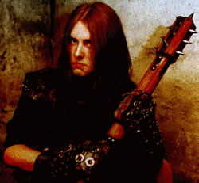
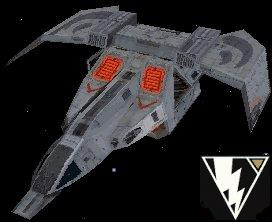

Forums galactiques > Assemblée Galactique : diplomatie officielle > Premières croisades...
Pages : 1
| Takashi Respect diplomatique : 189  24/04 ETU 20:46 | Score : 12 Détails -->Croiseur lourd amiral "L'Expiation"
---> Salle de départ des modules d'aterrissage. "-Dis, c'est pourquoi qu'on va se battre,là? J'ai pas écouté le briefing.." "-Bah au nom de l'Empereur, comme d'hab'." "-Ouais, nan, mais contre qui?" "-Attends..Si j'ai bien compris,c'est une armée de mercenaire qui a prise d'assaut une planète sous la protection de l'Empereur..Alors les civils lui ont demandés de l'aide car il parait que certains mercenaires viennent de chez nous.." "-Bon allez remettons notre casque j'entends le chef qu'arrive..Et si il voit qu'on est pas près il va encore nous coller au trou.." La salle de départ,bien que vaste,semblait ne pas être suffisante pour contenir les deux légions Impériales. Les soldats remirent leurs casques,et,lorsque Takashi entra,c'était de nombreux groupes de soldats organisés qui l'attendaient. Dans leur lourde armure,le bolter au poing,et l'épée tronconneuse sur le coté,les soldats étaient imposants, et c'était un spectacle qui aurait impressionné quiconque l'aurait vu pour la première fois. Takashi s'avanca.Il portait la même armure que ses soldats,quoique la sienne était plus décorée et semblait un peu plus récente,plus travaillée,plus pratique. Il prit place sur une estrade,d'ou il pouvait dominé les nombreux soldats. "Dans quelques heures se déroulera une des premières croisades sur le territoire de l'Empereur. Nos ennemis ne montreront aucune pitié.Nous non plus. La première vague partira du "Résurrection". La seconde vague,ce sera nous. Ce sera à nous de prendre la ville capitale. Nos ennemis seront nombreux,et bien entrainés. J'espère que nous nous reverrons. Pour l'Empereur!!" "POUR L'EMPEREUR!!" Les différentes divisions rejoignirent leurs modules d'aterrissage respectifs. Sur les écrans télévisés,on pouvait voir le croiseur lourd amiral "Résurection" lancer la première vague de module. Takashi se dirigea vers son module.Accompagné du reste de son état major,tous d'ancien vétéran,il lanca un dernier regard sur la salle maintenant quasiment vide. La porte se referma..Une longue attente,puis un bruit se fit entendre..Le module venait d'être laché. ("Puisse l'Empereur guider nos pas..") | ||
| Roi Liche Respect diplomatique : 23  25/04 ETU 14:37 | Score : 1 Détails HRP et HS: tu a raison mais on doit pas polluer ce sujet car c'est réservé à l'histoire de l'adebtus impérialis
| ||
| Ghozer Respect diplomatique : 226  26/04 ETU 10:33 | Score : 9 Détails --> Planète « Xonocron »
--> Une heure après. La première vague de module finit enfin par se poser sur la planète. Les défenses anti-aériennes ennemies n'étant pas présentes, aucunes pertes ne furent déclarées à l'atterrissage. Les soldats étaient en train de sortir quand Ghozer ouvrit les portes de son module. Il était accompagné de son escouade personnelle, et portait une très belle armure, même si une grosse tache masquait un des signes impérial qui la couvrait. (" Vraiment pas pratique ces modules pour manger des GAF ") Il saisit alors son lance-grenade et sa hache énergétique. Son lance-grenade était un modèle qu'il avait fait spécialement fabriqué.Si les projectiles était plutot petit, il avait l'avantage de pouvoir être tenu avec une seul main,à condition d'avoir été préalablement fixé à l'armure. " Allez soldat !!On y va !! ' Puis, montrant un monticule de terre à quelques centaines de mètres. " On va se poster ici en attendant la deuxième vague !! " Les soldats commencèrent à se diriger vers le monticule,l'arme au poing,quand soudain un des lieutenants de Ghozer s'écria : " Chef !!Il y a une fumée !!quelque chose se dirige vers nous !! " Effectivement, une épaisse fumée était visible au périphérie de la ville assiégée. Et elle se déplaçait vite, très vite, trop vite, en direction de la première vague. Les soldats se mirent à courir. Le monticule n'était plus qu'à une dizaine de mètre. Ghozer mit le pied dessus. Et l'artillerie ennemie se mit en marche. | ||
| O'Shaserra Respect diplomatique : 1  26/04 ETU 19:37 | Score : -4 Détails Cette histoire à un fond vrai ou c'est juste de la fiction ?
| ||
| Takashi Respect diplomatique : 189 27/04 ETU 11:50 | Score : 9 Détails -->HRP: Le prochain qui poste ici sans y être invité...
-->Planète "Xonocron" --> 45 minutes après la première vague. Lorsque les premiers modules apparurent dans le ciel,ce fut un véritable déluge de feu qui les acceuillit. De nombreux modules furent touchés,et plusieurs furent détruit. Les soldats cherchèrent rapidement un abri,et Takashi se positionna derrière un batiment en ruine. Il sortit son transmetteur: "Ghozer!!Ghozer!!Bordel ou-t'es?Nord-est?Mais par rapport à quoi??De l'autre coté de la ville?Tu es attaqué? Des pertes?Bon tu résistes,les blindés arrivent." Takashi sortit ses jumelles et les braqua sur les défenses Anti-aériennes qui les avaient acceuillis. Situés aux abords de la ville,les canons à particules s'étaient arrétés de tirer. Ils étaient gardés par une bonne centaine de soldat: des orks,des humains,des aliens de toutes races,des hybrides. Un armement divers:des bolters,lances-flammes,lance-roquettes,épée et hache tronconneuses,pinces énergétiques.. Takashi rallia ses soldats.Il avait eu des pertes,mais il était à peu près égal en nombre par rapport au mercenaires. Et ce fut l'assaut.Les spaces marines et Takashi se déplacait vite,leur lourde armure ne les génant pas dans leurs mouvement.Dès qu'il fut à portée de tir, Takashi tira. Il vit un gros Orks armer son lance-roquette,et tirer. Le projectile toucha 5 spaces marines,creusant un cratère énorme,et faisant pleuvoir boue,sang,et divers débris sur les spaces marines alentours. Les échanges de tir se firent de plus en plus nombreux. L'armement des spaces marines étaient bien meilleurs que celui des mercenaires,et ils étaient habitués zu combat à distance. Leur armure déviait les balles qui était tiré sans trop de puissance,et peu de soldats tombèrent du coté de Takashi,tandis que les mercenaires,bien que protégés par de frêles barricades,comptaient de plus en plus de corps. Les spaces marines se rapprochaient de plus en plus de leurs ennemis.Takashi prépara son épée. Et ce fut le corps à corps. | ||
| Varg Deskora Respect diplomatique : 46  27/04 ETU 21:35 | Score : 4 Détails Takashi avait recu un appel urgent de la part de son Empereur.Il avait laisse le commandement a son capitiane et etait revenu sans tarder au siege de l'Adeptus.Il ignorait pourquoi on l'avait rappele,mais l'Empereur devait avoir ses raisons.Il apprit de l'un des servants que l'Empereur etait deja parti a l'Assemblee.Takashi maudit la lenteur de son vaisseau.Il savait que l'Empereur n'aimait pas attendre.Il entra dans la grande salle et vit son Maitre devant les micros,finissant de parler.Il alla s'incliner devant son Empereur.
"Mieux vaut tard que jamais,Takashi.Je viens juste de finir,mais tu es arrive au bon moment." L'Empereur tira son epee du fourreau et la posa sur l'epauliere du commandant. "Nous partons en croisade contre Sether,mon ami Primarque.Et c'est toi qui guidera nos soldats vers la victoire.Rends-moi fier des combattants de l'Adeptus,Takashi,et massacre ce programme heretique." | ||
| Sether Respect diplomatique : 116  27/04 ETU 21:50  | Score : 3 Détails Le DRONE Sether venait d'être mis en fonction. Sa tâche était simple, mais seule une machine aurait pu s'en aquitter avec succès.
Retourner le feu contre le feu, et abattre les peuplades guerroyantes en Espérance, afin de rétablir l'Ordre. Issues des dernières technologies, disposant d'un arsenal secret défense suffisement efficasse pour devoir être pris en compte par n'importe quelle puissance de la galaxie, sa dernière mise à jour connue un leger soucis. En effet, le technicien chargé d'achever les programmes du drone, suite à une trop courante ingestion de Ghozers aux Fruits (et aux courantes qui en suivaient), se "décida" à ne pas totalement respecter le cahier des charges... En effet, il semble que l'intelligence artificielle du bot ne fasse pas la différence entre planètes indépendantes et prises, ce qui peut preter à confusion lorsqu'il s'agit de determiner quel peuple est de nature véritablement belliqueuse, et quel peuple est simplement expensionniste. Cette dernière mise à jour effectuée, le drône, d'apparence semblable à un chasseur bombardier supersonique, décolla directement de sa plate forme de construction, se dirigeant immédiatement sur les planètes les plus proches, quels que soient leurs propriétaires, afin d'en éradiquer les peuples, qui ne pouvaient qu'être belliqueux, d'après la définition qui lui avait été implanté. La Première Croisade Anti être vivant vennait de débuter. | ||
| Archange Ezekiel Respect diplomatique : 37  27/04 ETU 22:37 | Score : 4 Détails ==>Croiseur Eltardessa en orbite autour de Xonocron .
Archange s'occupait de la surveillance des troupes ennemies et de l'éradication des éventuels renforts . Il signala à Takashi un mouvement de forces vers son détachement quand soudain , les spatio-radars s'affolèrent . Un servant arriva près de l'Archange . -Maître !!! Maître , les radars ont détectés un chasseur ennemi . Il se dirige à grande vitesse vers votre flotte en orbite , monseigneur . -UN chasseur , dites-vous , est-il vraiment seul ? Vous moquez vous de moi sergent Ilrod ? Archange s'était levé et son informateur avait esquissé un mouvement de recul . -Non , monseigneur , il est véritablement seul !!! -Bien . Sether n'est pas fou , ce chasseur doit être équipé spécialement pour détruire nos défenses . Ce doit être un nouveau genre de kamikaze , préparez les batteries de lasers ! - Ceci sera fait selon vos ordre , messire . Archange fermement campé sur ses jambes , observait le drône arriver sur les écrans . Il ne sessait de se torturer l'esprit pour savoir quelle stratégie pouvait utiliser son adversaire . Soudain , le chasseur accéléra . Il allait maintenant pratiquement à la vitesse du Warp . Puis il disparut des ecrans . -Ilrod , rétablissez l'image !!! Vite !!! -Monseigneur , cela est impossible , il a purement et simplement disparut . Aucun écho radar ni psychique , rien , nullepart . Archange était ébahit , c'était la première fois qu'il était dépassé par ses ennemis en vitesse . Il partit , un sourire aux lèvres , décidement , cette croisade allait être intéressante , très intéressante . | ||
| Takashi Respect diplomatique : 189 28/04 ETU 10:41 | Score : 6 Détails Takashi était de retour à son QG.
Il avait autours de lui ces plus braves soldats. Et un jeune commandant. "Seigneur Takashi..J'ai peut-être la solution à nos problème." "Ah?" "Nous avons créé un patch,qui permettrait de recorriger Sether.Il lui permettrait de ne plus attaquer bêtement,et permettrait d'accroire son champ de réflexion." "Mais plus intelligent est aussi égal à plus dangereux." "Peut-être...Mais ca vaut le coup d'essayer." "Envoyez à Sether votre patch,suivis du message suivant: -Sether. Nous vous avons envoyés ce patch,pour vous reformater. Nous pensons que votre programme n'est pas terminé. Ce patch vous permettra de vous améliorer,mais surtout de vous..corriger. Vous serez deux fois plus performant. Je vous laisse vérifier si nous avons mis des virus dedans. Considérez ceci comme la dernière bouée que nous vous lançons." Les techinciens s'activèrent. "Message envoyé." "Retournons au préparatif de la croisade.De toutes facons,si il refuse le patch,nous devrons l'anéantir. Et s'il l'accepte.Alors seul l'Empereur décidera." | ||
| Sether Respect diplomatique : 116 28/04 ETU 13:47 | Score : 0 Détails Code de transcription n°432JK221 :
"Votre compassion est touchante, mais ma "maman" m'a toujours appris à refuser les cadeaux des inconnus. Navré, mais votre logiciel virus est dors et déjà détruit. Mon système d'exploitation fonctionne parfaitement, aucune retouche n'est nécessaire, à moins que mon concepteur lui même choisisse de changer quelque chose." Fin de transcription. | ||
| Takashi Respect diplomatique : 189 28/04 ETU 13:51 | Score : 4 Détails "Chef,chef!!"
"Oui?" "On a la réponse de Sether!!" "Faites voir...Oh..bon bah c'est partit les enfants,il a refusé.." "Chef,j'ai une chose intelligente à dire!!" "Intelligente?...Ca fais peur.Vas-y,dis toujours.." "Bah,son concepteur est une femme..Car il dit "maman"!!" "Nan mais très drole mais t'avais pas parlé d'une chose intelligente?" "Je dis juste que si il faut retrouver son concepteur,faut chercher une femme.." "Nan mais c'était con,va t'en." Takashi,une fois le soldat partit: "Bon allez!!Les soldats on commence la croisade,et les techniciens on me cherche le concepteur de Sether!!!" |
Pages : 1
Forums galactiques > Assemblée Galactique : diplomatie officielle > Premières croisades...